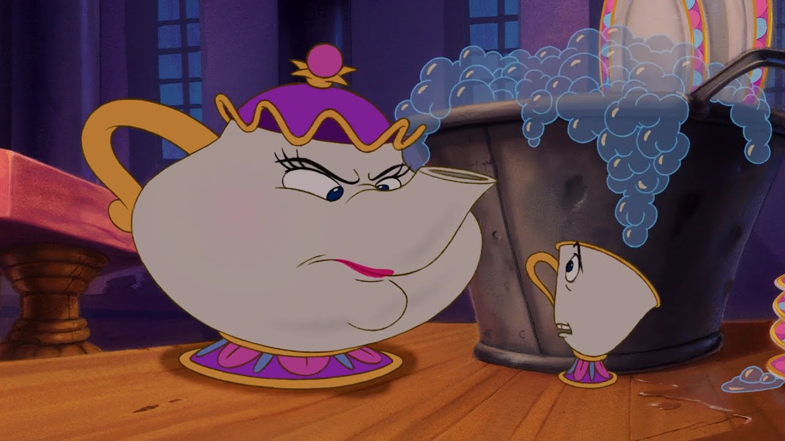

About Mrs. Potts
Mrs. Potts, from Beauty and the Beast, is the warm-hearted, maternal head housekeeper of prince Adam's castle, transformed into a sentient teapot by an Enchantress's curse. As a key ally to Belle, she fosters romance between her and the Beast, ultimately becoming human again when the spell breaks. She is the mother of Chip, the teacup.
Mrs. Potts scolding little Chip
Mrs. Pott’s characteristics
- Gentle yet firm
- Maternal
- Loyal
- Honest
- Looooooves her little Chip